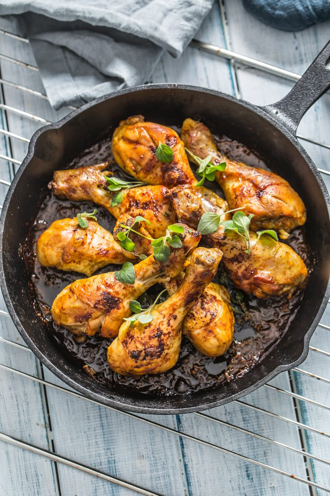

Chicken Stew Recipe
Prep:15 min|Cook:40 min|Serves:5

Ingredients
- 1 Kg chicken pieces
- 5 large tomatoes
- 2 scotch bonnet peppers
- 2 onions
- 1/2 cup vegetable oil
- 1 tbsp tomato paste
- 1 tsp thyme
- 1 tsp curry powder
- Ginger,garlic,salt,and seasoning cubes to taste
Steps
-
Season the chicken with ginger,garlic,salt,and seasoning cubes.Boil for
20 minutes,keep the stock
- Fry the boiled chickens in a little oil until goledn.Set aside
-
Blend the tomatoes,bell peppers,scotch bonnet,and one onion.Boil to
reduce the water
-
Heat the oil,fry the second sliced onion,then add the tomato paste
-
Add the reduced pepper mix and fry for 15 minutes until the oil floats.
- Add thyme,curry,a cup of chicken stock,and sseasoning
- Add the chicken and simmer for 10 minutes
Tip:Fry the stew well.Under fried tastes sour